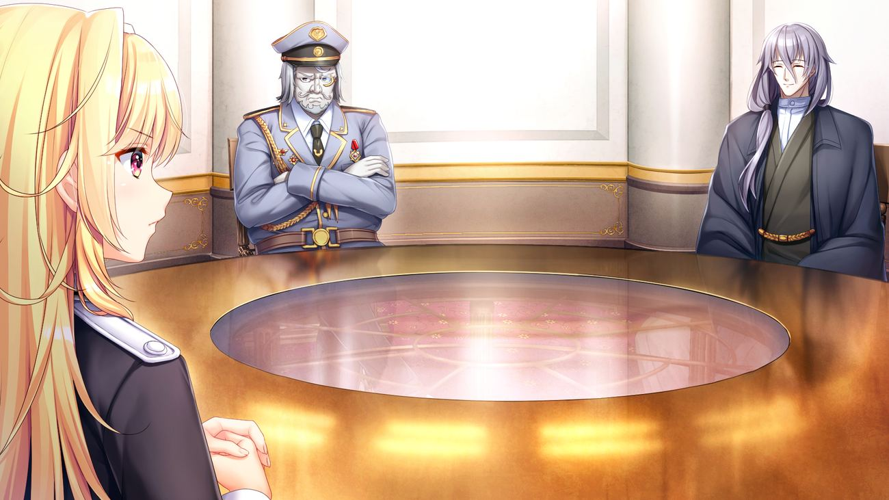

Sinopsis · I

Pecahnya peperangan antara Federasi Kaarg dan Kekaisaran Vilcar akhirnya memasuki titik jenuh sehingga terjadilah gencatan senjata melalui cara diplomatis.
Teritori Kaarg yang masuk zona peperangan diperebutkan oleh kedua belah pihak, sampai akhirnya Republik Ymir turun tangan sebagai penengah — wilayah tersebut pun menjadi Zona Buffer atau Zona Netral Perang dibawah regulasi Republik Ymir.